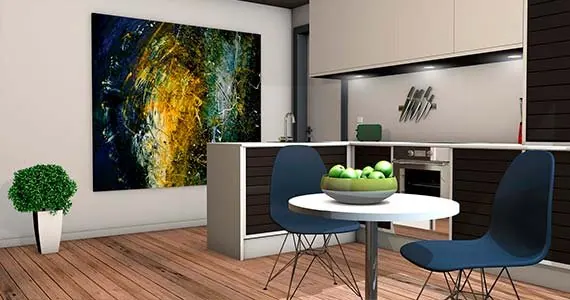
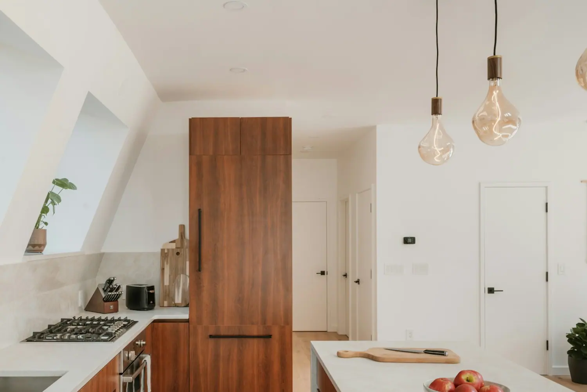
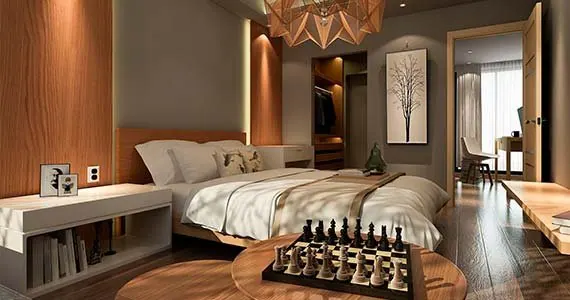
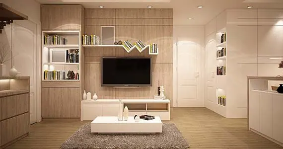
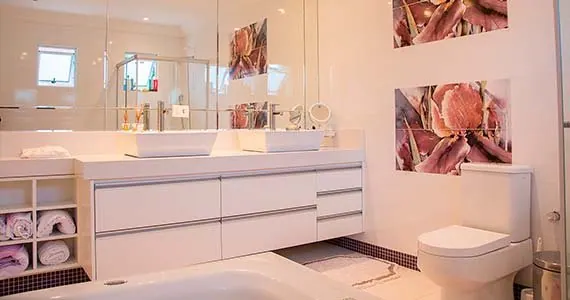

Cozinha planejada
A melhor maneira de montar uma cozinha planejada é saber as medidas do ambiente e contar com as peças certas para ganhar espaço.
Trabalhamos incansavelmente para conquistar nossa reputação de qualidade e confiabilidade em todos os produtos e serviços de madeira que oferecemos. Materiais de primeira linha, mão de obra profissional e preço imbatível.

Alguns serviços de marcenaria
Se busca móveis planejados, cozinha planejada, guarda-roupas planejado, marcenaria ou carpinteiro em São Paulo, fale conosco. Teremos imenso prazer em trazer soluções a você.

A melhor maneira de montar uma cozinha planejada é saber as medidas do ambiente e contar com as peças certas para ganhar espaço.

Soluções de quartos planejados com funções, estilos e tamanhos diferenciados, atendendo as mais variadas necessidades.

Móvel sob medida para sala de estar e home, aproveitando o espaço disponível de forma inteligente.

Armário, gabinete e nicho sob medida, com material adequado à umidade do ambiente.
Nossa história
Nosso compromisso é trazer profissionalismo, bom serviço e confiança para o serviço contratado. Temos imenso orgulho em enviar alguns de nossos profissionais para trazer solução para suas casas.
Oferta especial
Os projetos 3D de móveis planejados são desenvolvidos com base nas dimensões do ambiente que receberá o móvel, e também nas especificações passadas pelo cliente, como o tom do madeirado, o tipo de revestimento e os modelos de puxadores.
Por que nos escolher
Os móveis planejados são desenvolvidos para atender toda e qualquer necessidade. Sua produção é feita de acordo com o gosto do cliente, seguindo as medidas exatas de cada ambiente. Tamanhos, cores, formas: cada peça é personalizada.
Cada centímetro do espaço é medido para que a construção dos móveis seja exclusiva para o ambiente desejado.
Depoimentos
Recomendo esse pessoal, meu banheiro planejado ficou muito bom. Houve um contratempo por parte do síndico do prédio, mas que foi sanado e finalizado meu trabalho. Obrigado!
Davi Gomes · TécnicoInicialmente pensei em fazer com móveis modulados, mas depois de saber o tanto de espaço perdido, decidi por móveis planejados. Para mim valeu a pena, ficou maravilhoso!
Dayane Prado · Recursos HumanosRealizamos o serviço de móveis planejados em nosso quarto de casal, ficou magnífico, amamos demais e somos imensamente gratos pelo ótimo atendimento da Uriel Marcenaria.
Cristiane Souza · EmpresáriaMinha sala planejada ficou exatamente como imaginava. Foi ótimo ser atendida por essa empresa, recomendo!
Simone Matias · SecretáriaContato
Entre em contato conosco para mais informações. Temos as melhores condições.